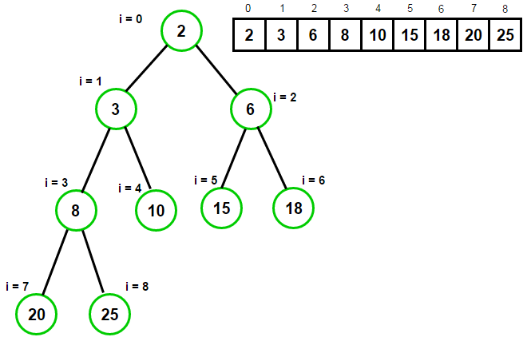
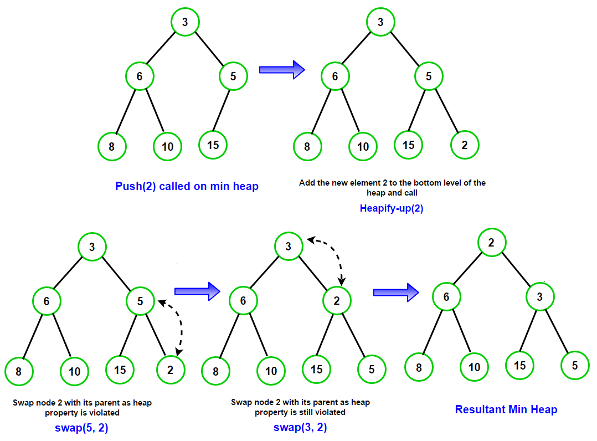
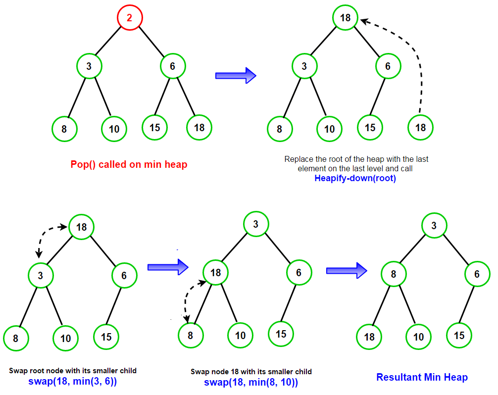
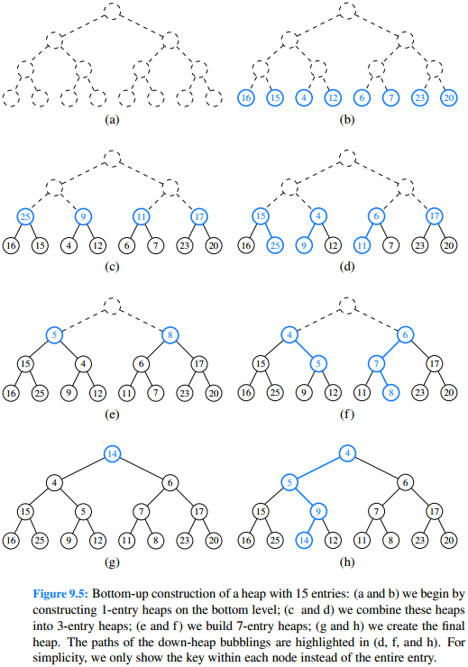

Priority queues
A priority queue is similar to a regular queue, except each element has a priority, and the highest-priority element is always the one that gets removed.Priority queues are typically implemented with a heap.
PriorityQueue (JCF) uses a heap and implements the Queue interface.

Array representation of a min heap. Source: techiedelight.com
Heaps
A binary heap is a binary tree with the following two properties:- Every node's key is greater than or equal to its children's keys (if it's a max heap) or less than or equal to its children's keys (if it's a min heap). The highest-priority element is at the root of the tree.
- It is a complete tree, which means that every level (except possibly the bottom level) is completely filled, and the nodes in the bottom level are as far left as possible. A complete tree can be efficiently represented an array. This saves space because we do not have to store pointers.
Insertion (min heap)
- Place the new element one spot after the last element (the new element becomes the rightmost element of the bottom level).
- While this element is smaller than its parent:
- Move this element upward by swapping it with its parent.

Heap insertion. Source: techiedelight.com
Deletion (min heap)
- Move the last element (the rightmost element of the bottom level) to the root of the heap (replacing the previous root).
- While this element is larger than one or both children:
- Move this element downward by swapping it with its smaller child.

Heap deletion. Source: techiedelight.com
Runtime
The height of the heap is O(logn), so in the worst case, both insertion and deletion perform O(logn) comparisons and swaps. Therefore the worst-case runtime is O(logn) (assuming the heap doesn't run out of space).Implementation
Sample codeClass: PriorityQueue
Implemented with a min heap.
- In this implementation, the root is at heap[1] (heap[0] is unused).
heap[i]'s parent is heap[i/2], and heap[i]'s children are heap[i*2] and heap[i*2+1]. - In this implementation, each element's value is its priority. Some implementations use key-value pairs (where the key is the priority).

Source: Goodrich p. 381
Building a heap bottom-up
Inserting n elements into a heap takes O(nlogn) time in the worst case, but if we are given an array of n elements, we can convert it to a heap in O(n) time in the worst case. (proof: Goodrich p. 383)Before we begin, note that every leaf is already a 1-element heap.
For each position i, starting at the last non-leaf and ending at the root, bubble-down heap[i].
Both subtrees of heap[i] are already heaps, so after bubbling-down, the subtree rooted at heap[i] is a heap.
Intuitively, this is faster because most of the elements of a heap are close to the bottom, so when we bubble-down each element, most elements do not have to be moved far.
On the other hand, if we build the heap by inserting one element at a time, and bubble-up each element, in the worst case every element must be moved all the way to the root.